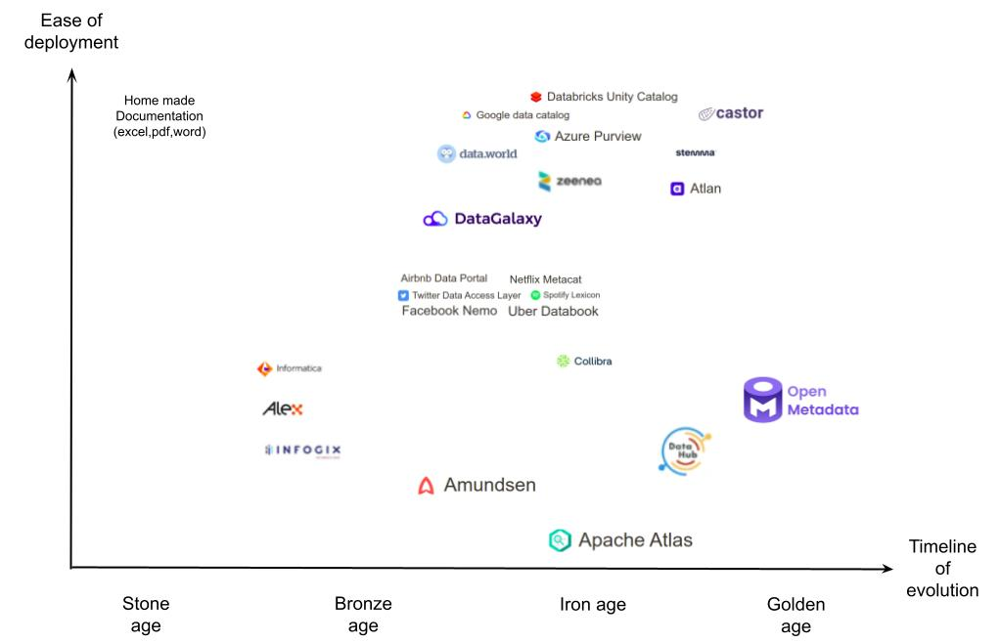
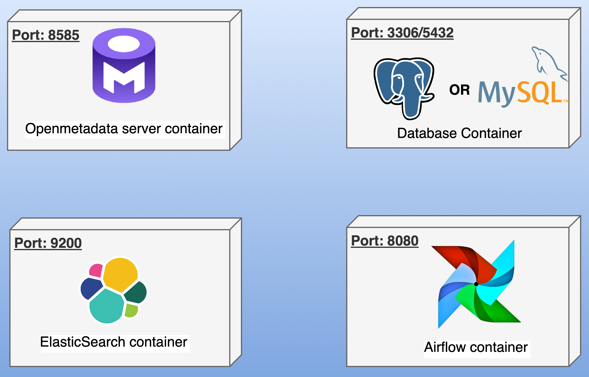

Metadata management for G4H
Pengfei Liu
Overview
- Introduction of metadata management
- What has been done?
- Future works
What is data governance?

Data governance is a collection of processes, roles, policies, standards, and metrics that ensure the data availability, usability, interoperability, security (i.e. confidentiality, integrity, privacy). .
Data governance vs Data management
Data management is an entire suite of practices, processes, systems and tools which implement the data governance definitions.
- Data governance: defines the policies and accountability(i.e. what must be done and why.)
- Data management: enforces the policies(i.e. how it gets done in practice.)
Kep concepts in data management:
- Data Principals: defines data ownership, accountability, ethics, compliance, etc.
- Data Lifecycle: describes the stages data goes through from creation to deletion in your organization.
- Data Quality: measures how fit data is for its intended use
- Metadata Management: facilitates the search and usage of data by providing context
- Data Security: protects data against unauthorized access, corruption, or loss.
What is metadata?
ISO/IEC 11179: metadata (information objects) are data about Data Elements, Value Domains, and other reusable semantic and representational information objects that describe the meaning and technical details of a data item.
My definition : metadata is structured information that describes one or more aspects(e.g. format, size, purpose, etc.) of a data entity. In general, Metadata is used to summarize basic information about data which can make finding, tracking, using, and managing data easier.
Descriptive Metadata: What is the data asset about?
The descriptive metadata explains the data content and meaning, It helps user to discover and understand data
- Schema, distinct value, nullable, etc.
- Content descriptions (tables, columns)
- Keywords or tags
- Themes or categories
Context Metadata: Why does the data asset exist?
The Context Metadata explains the context, goals, and justification. It ties data to organizational objectives and compliance.
- Compliance rules
- Impact analysis
Lineage Metadata: Where is the data asset from?
The Lineage Metadata tracks the origin and transformations of the data. It enables traceability, impact analysis, and debugging.
- Data source
- Transformation
- Destination
Ownership Metadata: Who is responsible for the data asset?
The Ownership Metadata assigns accountability. It clarifies responsibility for quality, compliance, and issue resolution.
- Data provider
- Data Owner
- Data consumer
Temporal Metadata: When was the data asset created and updated?
The Temporal Metadata captures timestamps and version history. It supports auditing, compliance, and time-sensitive decisions.
- Creation date
- Last update date
- Version
Administrative & Technical Metadata: How can the data asset be used?
The Administrative & Technical Metadata defines usage constraints, format, and access methods. It guides safe, legal, and efficient data usage.
- Format: CSV
- Encoding: UTF-8
- Access method: Rest API endpoint
- Privacy policy: Contains personal data, GDPR applies
- Retention policy: Keep for 7 years
What is metadata management?
- Designing metadata model: Gathering requirements, and identifying which metadata need to be collected
- Creating metadata: Gathering the metadata of essential data entities.
- Storing metadata: Centralizing and standardizing metadata in a repository.
- Using metadata: Providing tools to search/discover, understand and trace data by using metadata.
- Auditing metadata: Check if the collected metadata is correct and fulfils the requirements.
Popular metadata management tools
There are many Metadata Management tools, CASD has tested most of the opensource solutions.
What is open metadata?
Open Metadata is an open-source, modern metadata management tool. It provides:
- Unified metadata storage
- Centralized data catalog with powerful search engine
- Collaboration features(e.g. tasks, team conversations, etc.) for better auditing
Open metadata main components
Open Metadata platforms contains: web application, RDBMS, search engine, and workflow manager
Types of Metadata Managed by Open metadata
- Descriptive Metadata: What is the data asset about?
- Context Metadata:: Why does the data asset exist?
- Lineage Metadata: Where is the data asset from?
- Ownership Metadata: Who is responsible for the data asset?
- Temporal Metadata: When was the data asset created and updated?
- Administrative & Technical Metadata: How can the data asset be used?
Advantage of Open metadata
- Open-source ane extensible.
- Support all metadata types.
- Enhances collaboration across teams.
- Strong community support.
Disadvantage of Open metadata
- Deployment and setup are complex.
- Ingestion framework requires many development time
- May need customization for specific needs.
What has been done?
- Open-Metadata deployment, backup, upgrade
- Metadata model v1(SNDS standard from CNAM)
- Metadata ingestion python API v1(compatible with OM-1.4.x)
What needs to be done?
- Automation of Open-Metadata deployment, backup, upgrade
- Metadata model v2(include simplified table and lineage, need help of Sofiane)
- Metadata ingestion python API v2(compatible with OM-1.9.x, Glossary, lineage support)
DEMO
- Use Open-Metadata to discover datasets
- Use Open-Metadata collaboration to improve metadata